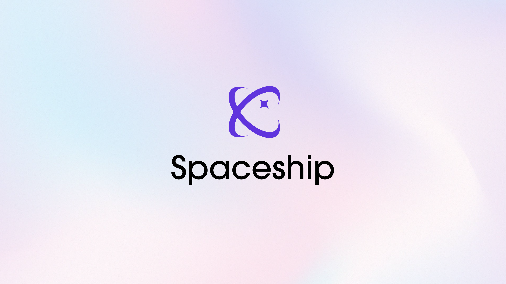

Spaceship: Creating Immersive Spaces for Shared Memories
Spaceship redefines how we share and preserve personal memories by creating customizable 3D spaces filled with emotional and visual significance. Designed as a blend of personal storytelling and social interaction, this project offers users a new way to connect through immersive environments.
The Concept
Inspired by the idea of blending "Space" and "Relationship," Spaceship allows users to arrange their memories in a 3D environment. From photos and post-its to music objects, the platform enables personalization while fostering shared experiences. Users can invite friends to explore these virtual spaces, leaving messages or interacting through avatars.
Key Features
- Photo and Object Placement: Freely arrange personal photos, notes, and objects in a virtual 3D space.
- Background Music: Add music objects to customize the atmosphere of the space.
- Social Interaction: Invite friends to explore, interact, and leave guestbook messages in the space.
- Avatar-Based Interaction: Avatars can perform actions like waving, touching, and zooming in to enhance social engagement.
Design and Development
The project was realized using tools like Blender for 3D modeling, Unity for development. The user interface was designed to remain subtle, with translucent panels ensuring the 3D space remains the focal point.
Service Flow
- 1. Upload and arrange photos and objects in an empty virtual space.
- 2. Add music objects to set the mood for your space.
- 3. Invite friends to explore the space and share memories together.
- 4. Encourage interactions like leaving guestbook messages or exploring objects.
Future Directions
Spaceship aims to expand its capabilities by integrating advanced VR features and enhancing avatar interactions. The project seeks to serve not only as a personal memory space but also as a platform for collaborative creativity and storytelling.